Android is Compose-first
공식 문서의 표현을 그대로 옮기면, View 툴킷은 이제 유지보수 모드(maintenance mode)입니다. "it will only receive updates for highly critical fixes" · 신규 기능은 나오지 않고, 치명적인 수정만 반영됩니다. 버전만 봐도 방향이 읽히는데, 신규 기능 기준으로는 표에 적힌 지금 버전이 사실상 View 시스템의 마지막 모습이 될 가능성이 큽니다.
| 라이브러리 | 최신 stable | 비고 |
|---|---|---|
| RecyclerView | 1.4.0 (2025.12) | 유지보수 마커 |
| Fragment | 1.8.9 (2026.07) | |
| ConstraintLayout | 2.2.1 (2025.02) | 유지보수 마커 |
| ViewPager2 | 1.1.0 (2024.05) | 2024년 이후 정체 |
| DataBinding | AGP 내장 | 별도 버전 없음 |
버전 출처: AndroidX Stable Channel · AndroidX releases (2026.07 기준)
그 방향은 이름 그대로 Compose-first입니다. 물론 지금 당장 전면 재작성을 하라는 뜻은 아닙니다. 공식 블로그도 "adopt Compose at your own pace", 각자의 속도에 맞춰 도입하되 신규 코드는 Compose로 작성할 것을 권고합니다. 기존 View는 interop으로 계속 동작합니다.
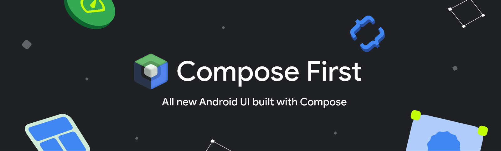
Styles API · 스타일링을 재사용 가능한 객체로
Compose 쪽 변화도 하나 짚어 둡니다. 그동안 스타일링은 Modifier 체인뿐이었죠. padding, background, clip을 컴포넌트마다 반복해서 붙였습니다. 이제는 Style 객체로 한 번 정의하고 여러 곳에서 재사용할 수 있습니다.
Before → After// Before: Modifier 체인을 매번 반복 Column(Modifier.padding(16.dp).background(Blue).clip(Shape)) { ... } // After: Style로 한 번 정의하고 재사용 val cardStyle = Style { padding(16.dp); background(Blue) } Column(style = cardStyle) Row(style = cardStyle)
- 구성 요소:
background·border·shape같은 시각 속성과fontSize·fontWeight같은 타이포그래피 속성을 하나의 객체로. - 적용 방식:
style파라미터를 받는 컴포넌트에는 그대로 넘기고, 그 파라미터가 없는 컴포넌트에는Modifier.styleable로. - 재사용성:
Style { … }로 한 번 정의해 여러 곳에서 같은 객체를 쓰고, 값을 바꿀 때도 정의 한 곳만 고칩니다.
속성이 누적되는 Modifier 체인과 달리, Style 안에서 같은 속성을 여러 번 지정하면 마지막 값만 적용됩니다.
왜 나왔는지는 네 가지로 정리됩니다.
① 재사용 · 공통 외형을 객체로 추출해 여러 컴포넌트가 공유합니다.
val card = Style { background(Blue); padding(16.dp) } Column(style = card) // 같은 객체를 Row(style = card) // 여러 곳에서 공유
② 속성 상속 · 이게 핵심입니다. Modifier는 자식으로 전파되지 않지만, Style은 typography·contentColor 같은 속성이 하위 컴포넌트로 상속·전파됩니다(CSS cascade와 동일).
val section = Style { fontSize(18.sp); contentColor(Blue) } Column(Modifier.styleable(section)) { Text("제목") // fontSize·color 상속 Text("본문") // 동일하게 상속 }
단, 모든 속성이 상속되는 것은 아닙니다. 같은 컨테이너에 두 속성을 함께 걸어 보면 차이가 드러납니다.
Row(Modifier.styleable { background(Blue) // 시각 속성 → Row에만 칠해짐 (non-inherited) contentColor(White) // 텍스트 속성 → 자식까지 내려감 (inherited) }) { Text("Content") // 배경색은 못 받고, 글자색만 상속받음 }
즉 background·padding 같은 시각·레이아웃 속성은 styleable을 건 컨테이너에만 적용되고, contentColor·fontSize 같은 텍스트 계열 속성만 하위 컴포넌트로 상속됩니다.
③ 역할 분리 · 큰 그림부터 보면, Style은 내부적으로 특수한 Modifier입니다. 그래서 Modifier는 Style이 하는 일을 모두 할 수 있지만, 그 반대는 성립하지 않습니다. Style은 Modifier를 보완할 뿐 대체하지는 못하죠. 공식 Styles vs Modifiers 가이드의 구분은 이렇습니다. 기존 컴포넌트의 기본값을 덮어쓰거나, 색·크기 같은 시각 속성을 자주 애니메이션하거나, 테마 전역 속성을 정의할 때는 Style. 클릭·제스처 같은 동작을 붙이거나, 일회성 커스텀 레이아웃을 짜거나, 속성을 누적해야 할 때는 Modifier.
Box( Modifier .clickable { } // 동작(입력 처리)은 Modifier .styleable(cardStyle) // 시각 속성은 Style )
패딩·크기·배경·그림자처럼 레이아웃·드로잉에 가까운 속성도 Style이 다룹니다. 그래서 경계는 외형 vs 레이아웃·드로잉이 아닙니다. 진짜 구분 축은 이렇습니다.
- Modifier: 동작(클릭·제스처), 일회성 커스텀 레이아웃, 속성 누적이 필요할 때
- Style: 재사용, 테마 전역 적용, 시각 속성 애니메이션이 필요할 때
④ 디자인 시스템 · 우리 컴포넌트에 style 파라미터를 노출하면 스타일을 코드로 표준화할 수 있습니다.
@Composable fun BrandButton(style: Style = Style { }) { … } BrandButton(style = primary) // 스타일을 파라미터로 표준화
공식 문서도 "not everything that is a modifier can be replicated with a Style"라고 말합니다. 앞서 봤듯 Style은 재사용·테마 가능한 시각 속성을 얹은 층이고, 동작과 일회성 레이아웃은 그대로 Modifier가 맡습니다. I/O 2026에서 공개돼 Compose 1.11(BOM 2026.04.01)에 들어 있지만, 아직 @Experimental이라 바뀔 수 있습니다.
성능 이점도 있습니다. 시각 속성이 자주 바뀌는 상황에서 Style은 Composition을 건너뛰고 Layout·Draw 단계에서 값을 갱신하기 때문입니다. 박스 테두리 색만 바꾸는 공식 벤치마크(basic_box_border_change)에서 Modifier 방식 대비 객체 할당 약 77%, 실행 시간 약 59%가 줄었습니다.
마이그레이션은 "우리 것으로 튜닝한 Skill"로
남은 마이그레이션은 어떻게 할까요. Google이 공식 Compose 마이그레이션 Android Skill을 냈습니다. 만든 기준이 흥미로운데, "workflows where evaluations show LLMs underperform" · LLM이 평가상 자주 틀리는 작업을 스킬로 묶었다고 합니다.
android skills add --skill=jetpack-compose
하지만 제가 있는 팀에서는 이걸 그대로 쓰지 않았습니다. 이 스킬은 "a structured, 10-step methodology"로 XML을 Compose로 옮기는데, UI 변환만 담당한다고 명시돼 있습니다. 문제는 이 스킬이 상태 관리 전략을 에이전트 판단에 맡긴다는 점입니다(레퍼런스 1절의 "appropriate state management strategy"). 실제로 돌려보면 에이전트가 UDF·상태 호이스팅 쪽으로 코드를 끌고 가, 기존 MVVM 구조와 부딪히는 경우가 있었습니다. 그래서 컬리에서는 이렇게 커스텀했습니다.
- Step 3 계획 · Step 7 변환 · ViewModel 흐름을 유지하도록, MVVM 고정으로 커스텀 (UDF 강제 전환 차단)
- Step 4 기준 UI 캡처 · 이미 쓰던 사내 스크린샷 스킬로 대체
- Step 6 테마 · Kurly 브랜드 테마 매핑 (부분 커스텀)
UI 마이그레이션에 아키텍처 변경까지 얹으면 문제가 생겼을 때 원인이 화면 전환 탓인지 구조 변경 탓인지 가려내기 어렵고 리뷰·롤백 비용도 커지므로, 한 번에 화면만 바꾸고 구조는 그대로 두는 편이 안전합니다.
나머지 표준 단계는 그대로 쓰고, 우리 팀에 안 맞는 부분만 갈아 끼운 겁니다. 커스텀 스킬은 .skills/에 팀 버전으로 커밋해 공유합니다.
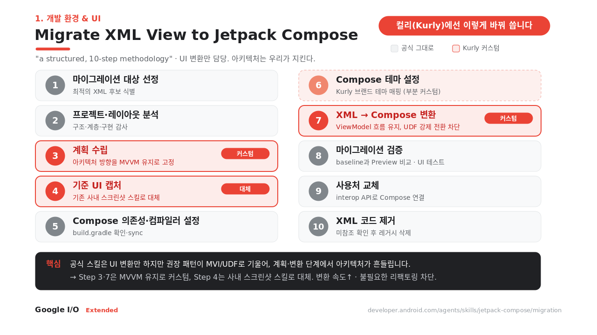
재미있는 건, Android Skill 하나가 오늘 주제 하나로 이어진다는 점입니다. jetpack-compose(1) · r8-analyzer(2) · appfunctions(3) · intent-security(4) · wear-compose-m3(6).
android/skills 저장소는 지금도 활발히 업데이트되고 있으니, 다른 스킬도 한번 둘러보세요.
내일 할 일
- 신규 화면은 Compose로 시작 · 팀 룰로 고정
- 마이그레이션엔 Skill 적용하되, 공식 스킬을 그대로 쓰지 말고 우리 아키텍처에 맞게 커스텀해
.skills/에 커밋
앱을 가볍게 만드는 두 방향
빌드 타임에 앱을 줄이는 R8, 그리고 런타임 메모리를 관리하는 Android 17 Memory Limiter. 둘 다 앱을 가볍게 만드는 이야기입니다. 런타임 쪽부터 살펴봅니다.
Android 17 Memory Limiter
Android 17은 기기 총 RAM 기준으로 앱별 메모리 상한을 두기 시작했습니다. 공식 표현 그대로 "if an app exceeds those limits, Android will kill the process with no associated stack trace." 이 한도를 넘으면 스택 트레이스 없이 프로세스가 종료됩니다.
왜 이렇게까지 할까요. 앱 하나가 메모리를 독점하면, 시스템(LMK)이 공간을 확보하려고 멀쩡한 다른 캐시 앱들을 대신 죽입니다. 이 연쇄 킬(cascading kills)을 막으려는 겁니다. 지금은 시스템 기준선을 잡는 단계라 한도를 보수적으로 설정해, 극단적인 누수나 이상치부터 겨냥합니다.
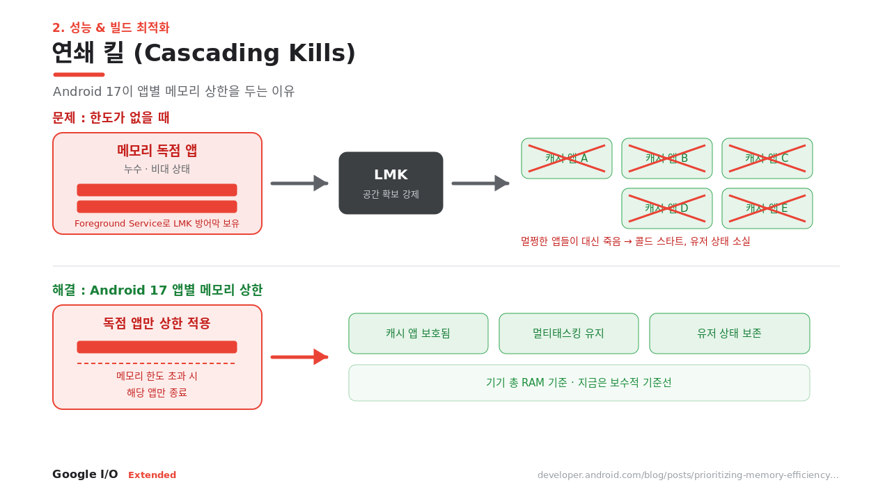
출처: Prioritizing Memory Efficiency, Behavior changes: all apps
문제는 크래시 로그가 안 남는다는 것. 그래서 탐지가 중요합니다. 공식 문서가 안내하는 확인 방법은 ApplicationExitInfo입니다. 종료 사유가 REASON_OTHER이면서 설명 문자열에 "MemoryLimiter:AnonSwap"이 들어 있으면 한도로 종료된 세션입니다.
MemoryLimiter 탐지 · ApplicationExitInfoval am = getSystemService(ActivityManager::class.java) for (info in am.getHistoricalProcessExitReasons(packageName, 0, 0)) { if (info.reason == ApplicationExitInfo.REASON_OTHER && info.description?.contains("MemoryLimiter:AnonSwap") == true) { // 메모리 한도 초과로 종료됨 → 크래시 리포터에 기록 } }
탐지 수단은 종료 시점 기준으로 세 가지로 나뉩니다. 종료 직전에는 ProfilingManager가 힙 덤프를 자동 저장(TRIGGER_TYPE_ANOMALY)해 원인 분석용으로 남깁니다. 종료 후 다음 실행에서는 위의 ApplicationExitInfo로 리미터 종료를 확정합니다(종료 사유가 문자열로 명시되는 확정 신호). 그리고 예정으로 Play Console에 필드 메모리 지표를 노출하는 기능이 준비 중입니다.
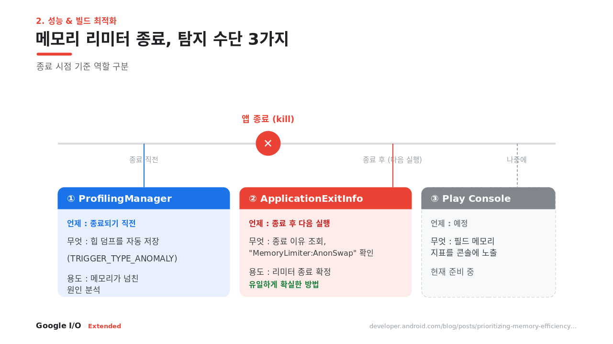
로컬 시뮬레이션 · adb# 메모리 한도를 조정/무시해서 동작을 시뮬레이션 adb shell am memory-limiter ignore <uid|all|none>
onTrimMemory()의 TRIM_MEMORY_UI_HIDDEN·TRIM_MEMORY_BACKGROUND에서 비트맵 캐시 등을 자진 반납하면 한도에 덜 걸립니다. 참고로 앱 메모리에서 가장 큰 객체는 대개 Bitmap입니다. 100KB짜리 압축 이미지도 디코딩되면 수 MB가 됩니다. Coil/Glide 사용, 뷰 크기에 맞는 다운샘플링, 투명이 불필요하면 RGB_565(ARGB_8888의 절반)로 줄이세요. 중복 비트맵은 Android Studio 힙 덤프의 ⚠️ 경고가 잡아줍니다.
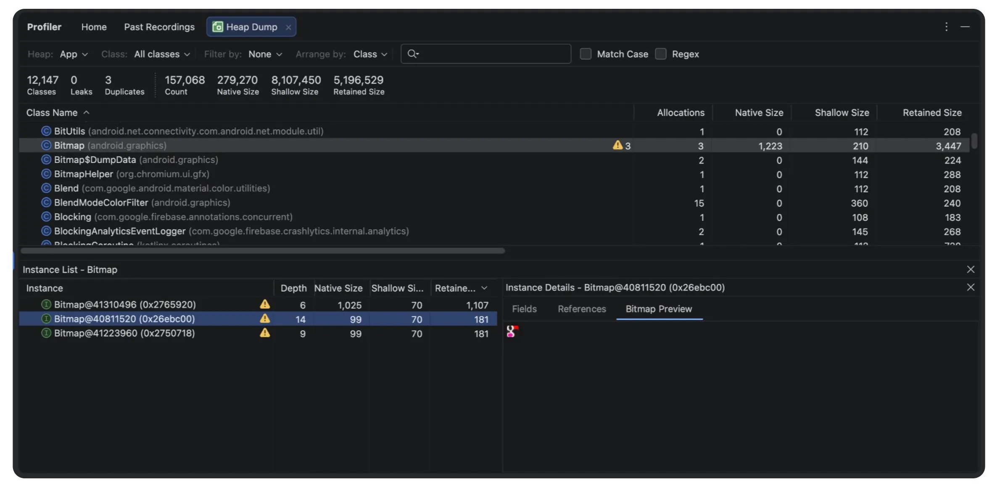
출처: Prioritizing Memory Efficiency
R8 Configuration Analyzer · keep 규칙만 정리해도
full R8(full mode)은 더 공격적인 최적화 모드입니다. 지금은 AGP 기본값이라, android.enableR8.fullMode = false를 지우면 켜집니다. 실제 사례로 디지털 뱅크 Monzo는 full R8을 켰을 때 이런 개선을 봤습니다.
이를 도와주는 게 R8 Configuration Analyzer입니다. 우리 코드의 몇 퍼센트가 최적화 대상인지 세 점수(Shrinking·Optimization·Obfuscation)로 보여주고, 어떤 keep 규칙이 최적화를 막는지 짚어줍니다. 명령 한 줄이면 HTML 리포트가 나옵니다.
./gradlew :app:analyzeReleaseR8Config # → HTML 리포트
공격적 최적화라 리플렉션이 자주 깨집니다(ClassNotFoundException, NoSuchMethodException). Signature 등 attribute가 보존되지 않아 Gson 역직렬화가 실패할 수 있고(Gson 2.11+는 자체 번들), no-arg 생성자가 유지되지 않아 newInstance()용 keep 규칙이 필요하며, 인라이닝을 위해 접근 제어자가 바뀔 수 있습니다. full mode를 켠 뒤엔 전체 회귀 테스트 + 라이브러리 최신화가 필수입니다.
내일 할 일
./gradlew :app:analyzeReleaseR8Config로 세 점수 baseline을 확보하고 팀 대시보드에 기록- 크래시 리포터에
"MemoryLimiter:AnonSwap"감지 로직 추가 adb shell am memory-limiter로 Android 17 동작 미리 검증r8-analyzer스킬을 붙여 keep 규칙 정리 · 단, AI 제안은 "will require technical verification", 반드시 검증 후 반영
Android는 이제 지능형 시스템
Google은 올해 The Android Show와 I/O에서 Android가 "operating system에서 intelligence system으로" 전환한다고 선언했습니다. 기기가 하드웨어와 소프트웨어를 묶어 사용자의 의도를 먼저 파악하고, 앱은 적절한 순간에 그 경험을 제공하는 역할을 맡는다는 구상입니다. 그 연장선에서 개발자에게 던진 문장이 "connect your app to the intelligence system"입니다. 온디바이스 AI와 에이전트가 앱 기능을 직접 찾아 호출할 수 있도록, 앱을 그 지능형 시스템에 연결하라는 뜻이죠. 개발자 입장에서 핵심은 관점의 전환입니다.
지금까지는 사용자가 UI를 단계별로 직접 조작했습니다. 이제는 앱이 능력을 orchestratable tools로 노출합니다. 사용자는 자연어로 말하고, 에이전트가 앱 기능을 대신 호출합니다.
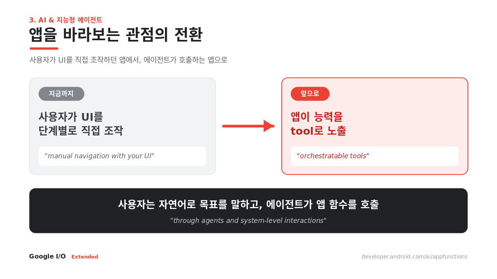
앱을 에이전트에 연결하는 두 경로
① App Functions · 우리가 직접 기능을 tool로 노출하는 능동적 방식. ② Computer Control · 코드를 못 건드리는 앱을 위한 폴백으로, OEM 탑재 어시스턴트(삼성 빅스비, 구글 제미나이 등)가 화면을 대신 조작(UI 자동화)합니다. 공식 표현으로 "no code changes required". 접근성 시맨틱에 의존한다는 점이 포인트입니다.
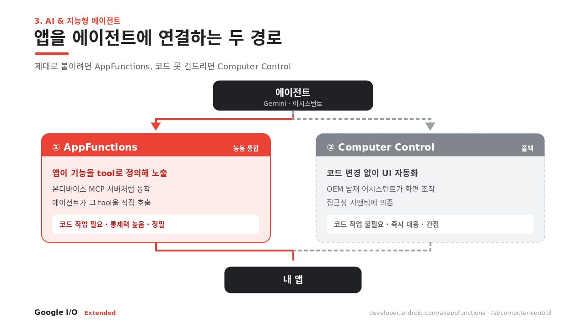
App Functions · 우리 앱 기능이 Gemini의 tool이 된다
한 줄로 요약하면 온디바이스 MCP입니다. 요즘 쓰는 MCP를 서버 대신 기기 안에서 로컬로 돌린다고 보면 됩니다. 흐름은 네 단계입니다: 선언 → 스키마 생성 → 조회 → 실행. 앱이 기능을 선언하면 라이브러리가 스키마를 만들어 OS가 인덱싱하고, 에이전트가 그걸 조회해 적절한 함수를 실행합니다.
구현 자체는 단순합니다. 함수에 @AppFunction 애노테이션을 붙이고 KDoc으로 설명을 달면, 그 KDoc이 곧 에이전트가 읽는 tool 설명이 됩니다. 다만 Gemini 연동은 아직 프리뷰 단계입니다.
온디바이스: Gemini Nano 4
지능을 기기 안에서 직접 돌리는 모델이 Gemini Nano 4입니다. 베이스는 오픈 모델 Gemma 4. 수치가 확실합니다.
단, 12GB RAM이 필요해 대상 기기는 아직 제한적입니다. 지금은 AICore Developer Preview로 미리 써볼 수 있고, Structured Output이나 Prefix Caching 같은 개발 편의 기능도 붙었습니다. 프리뷰로 준비해두는 단계라고 보면 됩니다.
내일 할 일
- 에이전트에 노출할 기능을 도메인 단위로 목록화 · Clean Architecture로 유스케이스를 잘 쪼갠 팀은 준비가 절반은 끝난 셈. 애노테이션 + KDoc만 얹으면 AppFunction 후보
- 접근성 시맨틱 정비 · Computer Control이 여기에 의존하므로, 접근성 라벨을 지금 정비해 두면 이후 자동화 대응이 수월해짐
권한을 요청하지 말고, 고른 것만 받는다
큰 흐름은 하나입니다. 전체 접근 권한을 받지 말고, 사용자가 고른 것만 시스템 선택기로 받아라. 지금까지는 사진·연락처를 쓰려면 런타임 권한 팝업을 띄우고 전체 접근을 받는 게 당연했지만, 이제는 시스템 선택기로 고른 항목만 앱에 넘어옵니다. 권한 자체가 사라지는 방향입니다.
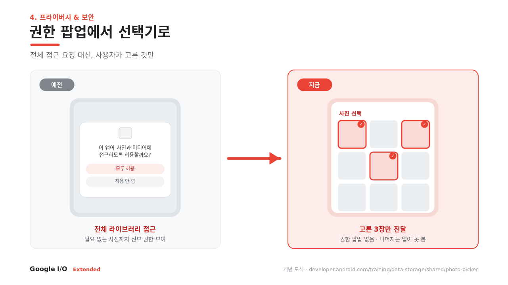
필수 Android 17 타깃 전에 반드시
Contact Picker · 이번 I/O 2026, Android 17에서 새로 나온 표준 연락처 선택 UI입니다. Photo Picker가 미디어에서 하던 걸 연락처에서 하는 것. 여기에 2026.04 새 Contact Permissions 정책이 붙어서, Android 17 타깃 시 Picker로 해결되는 기능엔 READ_CONTACTS를 못 씁니다. 대응은 세 단계입니다.
- 연락처 쓰는 기능을 모두 목록화
- "연락처 하나 골라 공유·초대" 유형 → Contact Picker로 대체(권한 제거)
- Picker로 핵심 기능을 제공하기 충분치 않은 경우에만
READ_CONTACTS유지 + Play Console 사유 선언
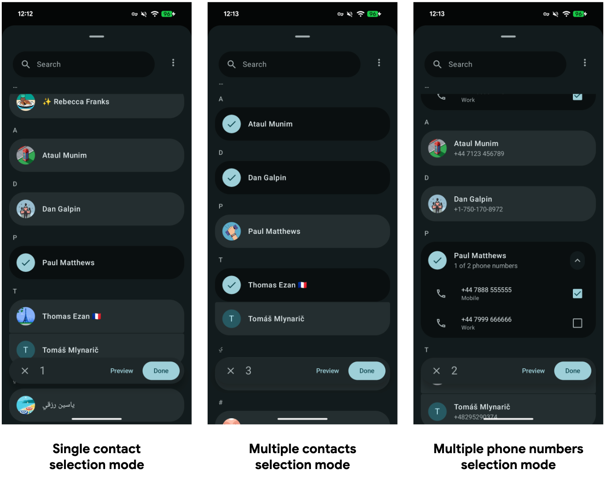
출처: Android 17 · Contact picker
SMS OTP · 이제 앱이 수신 대상이 아닌 일반 SMS의 OTP는 수신 후 3시간 동안 앱에서 못 읽습니다. 가입·로그인 인증 자동입력이 여기 걸립니다. 3시간 지연을 피하려면 다음 두 방식 중 하나로 전환하면 됩니다.
- SMS Retriever · 완전 자동입니다. 서버가 보내는 OTP 문자 안에 앱을 식별하는 고유 문자열(앱 해시)을 넣어 두면, Play 서비스가 그 문자만 골라 앱에 바로 넘겨줍니다. SMS 권한도, 사용자 확인도 필요 없습니다. 대신 문자 형식을 이 규칙에 맞춰야 하고, 문자를 만드는 서버 쪽 작업이 따라옵니다.
- SMS User Consent · 한 번의 동의가 필요합니다. 문자 형식을 바꾸기 어려울 때 쓰는 방식으로, "이 문자를 앱에서 읽도록 허용할까요?" 같은 시스템 다이얼로그가 한 번 뜨고 사용자가 허용하면 그 메시지 하나만 앱에 전달됩니다. 문자 형식 제약이 없어 기존 OTP 문자를 그대로 쓸 수 있습니다.
출처: Behavior changes · Apps targeting Android 17 · SMS Retriever API
BAL 하드닝 · Background Activity Launch, 백그라운드 앱이 사용자가 아무것도 안 했는데 갑자기 화면을 띄우는 동작으로, 피싱·화면 가로채기에 악용되던 것입니다. Android 17이 이를 조입니다.
- 기존 "무조건 허용" 상수는 삭제되지는 않고 deprecated 처리됩니다. 상수 자체는 남아 있습니다.
- 대응은
PendingIntent를 send할 때 넘기는ActivityOptions모드를 권장값으로 바꾸는 것입니다.ALLOW_IF_VISIBLE를 주면 호출한 앱이 화면에 보일 때만 백그라운드 실행이 허용됩니다(아래 코드). - 정말 무조건 허용이 필요하면
ALLOW_ALWAYS모드도 있지만, 기본은ALLOW_IF_VISIBLE를 권장합니다. - 푸시를 눌렀을 때 특정 화면을 띄우는 로직 등이 여기 걸릴 수 있어 점검이 필요합니다.
BAL 대응// setPendingIntentBackgroundActivityStartMode : API 34+ // MODE_..._ALLOW_IF_VISIBLE : SDK 36(Android 16)+ val options = ActivityOptions.makeBasic() .setPendingIntentBackgroundActivityStartMode( // 예전: MODE_BACKGROUND_ACTIVITY_START_ALLOWED (deprecated) // 권장: 호출 앱이 화면에 보일 때만 허용 ActivityOptions.MODE_BACKGROUND_ACTIVITY_START_ALLOW_IF_VISIBLE ) // 푸시 눌렀을 때 특정 화면 띄우는 로직 등이 여기 걸릴 수 있어 점검 필요
조건부 해당되는 앱만
- Local network · Android 17(SDK 37) 타깃 앱은 로컬 네트워크 접근이 기본 차단됩니다. 캐스팅·스마트홈처럼 LAN 기기와 넓게·지속적으로 통신해야 하면 새
ACCESS_LOCAL_NETWORK런타임 권한을 요청하세요(NEARBY_DEVICES권한 그룹). 일회성 검색·연결이면 권한 대신 프라이버시 보존 picker를 쓰는 편이 좋습니다. - 인증서 투명성(CT) · TLS 인증서를 공개 로그에 등록·검증해 위조를 차단하는 장치가 Android 17부터 기본 활성화됩니다. 공개 인증기관 인증서는 대부분 문제없지만, 사내 자체 인증서나 피닝을 쓰면 공개 로그에 없어 연결이 끊길 수 있습니다. 그런 경우 Network Security Configuration에서 전역 또는 도메인별로 opt-out 하세요.
출처: Local network permission · Network security configuration · Behavior changes · Apps targeting Android 17
개선 여유 있을 때
Embedded Photo Picker · 앱이 사진 권한을 아예 안 받아도 사용자가 고른 것만 넘어옵니다. 게다가 기존 권한은 로컬 파일만 봤지만 이건 Google Photos 같은 클라우드 라이브러리까지 접근합니다. 이 무권한·클라우드 접근은 기본(시스템) Photo Picker가 원래 제공하던 특징입니다.

출처: Photo picker (Android Developers)
다만 기본 피커는 앱 위에 별도 모달로 떠서 화면이 전환되고, 그리드 디자인은 앱이 손댈 수 없습니다. Embedded Photo Picker는 그 피커를 앱 화면 안에 직접 심어, 화면 전환 없이 인앱에서 고르게 합니다. 무권한이라는 안전성은 그대로 두면서, 배치·높이·강조색·최대 선택 개수 같은 외형 일부를 앱이 제어할 수 있게 열어 주는 것이 핵심입니다. 그럼 어디까지 바꿀 수 있을까요. 커스터마이징 정도를 스펙트럼으로 정리하면 이렇습니다.
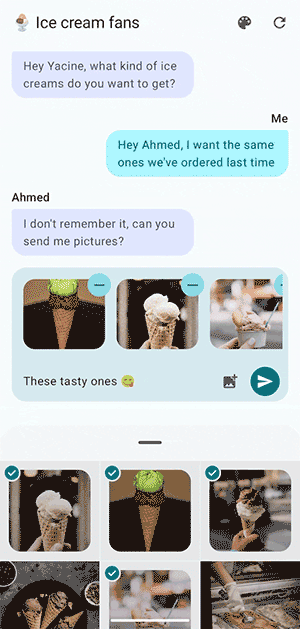
출처: Embedded photo picker (Android Developers)
- 시스템 피커 · 권한 없음, 커스텀 최소(그냥 띄우고 결과만 받음)
- Embedded 피커 (권장) · 권한 없이도 앱 화면 안에 직접 임베드해, 화면 전환 없이 인앱에서 사진을 고릅니다. 렌더링이 SurfaceView 기반이라 그리드 내부 픽셀은 앱이 손대지 못하는 보안 영역("광고 배너처럼 전용 영역으로 취급")이고, 그 덕에 권한이 필요 없습니다. 대표 강점은 연속 선택(Continuous) · 피커를 닫지 않고 계속 선택·해제하며 앱 UI 상태와 실시간 동기화됩니다. 배치·높이(
Modifier.height(500.dp)등)·강조색·최대 선택 개수·사전 선택 URI·MIME 타입 필터는FeatureInfo로 조절하고(강조색 기본값은 시스템 다이내믹 컬러), 선택 썸네일은 내 UI로 그립니다. Android 14(API 34) + SDK Extensions 15 이상에서 동작하며, 미충족 기기는 Play 서비스로 백포트됩니다. Compose는EmbeddedPhotoPicker컴포저블, View는EmbeddedPhotoPickerView를 씁니다. - Partial 권한 + 커스텀 갤러리 ·
READ_MEDIA_VISUAL_USER_SELECTED로 UI 100% 자유. 대신 권한 팝업이 부활하고 Play 정책 정당화 필요. 그리드까지 완전히 바꿔야 할 때만.
Embedded Photo Picker · Composeval pickerState = rememberEmbeddedPhotoPickerState() EmbeddedPhotoPicker( state = pickerState, embeddedPhotoPickerFeatureInfo = EmbeddedPhotoPickerFeatureInfo.Builder().setAccentColor(0xFF0000).build(), onUriPermissionGranted = { uris -> _attachments.value += uris }, onUriPermissionRevoked = { uris -> _attachments.value -= uris }, onSelectionComplete = { /* 선택 완료 → 피커 숨김 */ }, )
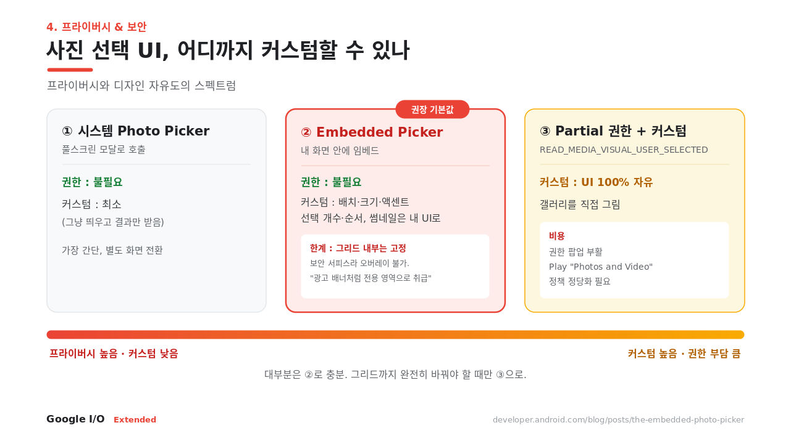
출처: Embedded Photo Picker, The Embedded Photo Picker (blog)
Credential Manager · 비밀번호·패스키·소셜 로그인을 하나의 API로 묶습니다. 주목할 건 conditional create. 기존 비밀번호로 로그인한 유저에게, 로그인 흐름을 방해하지 않고 일반 bottom sheet UI 없이 조용히 패스키를 만들어두고 사용자에겐 알림으로 알립니다. 유저를 귀찮게 하지 않고 패스키로 넘길 수 있어, 전환율 손실 없이 로그인을 점진적으로 강화할 수 있습니다.
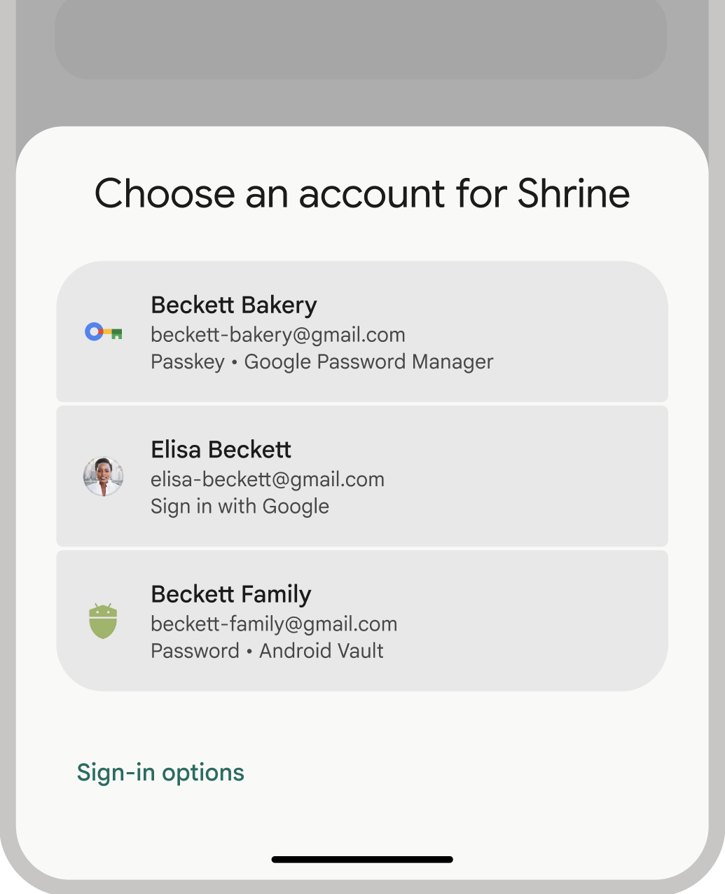
필수 Contact Picker · SMS OTP · BAL 모드
조건부 Local network · CT
개선 Photo Picker · Credential Manager
시한 · Play 타깃 API 상향은 보통 매년 8월 31일입니다(연장 신청 시 11월 1일). 2026년 8월 31일 시한은 Android 16(API 36)이고, 여기 정리한 Android 17(API 37) 대응 시한은 아직 공식 발표 전입니다. 관례대로면 2027년 8월 31일 무렵으로 예상되니, Play 타깃 API 요구사항 공지를 확인하세요.
Media3로 표준화 · 파편화 복잡성을 걷어낸다
공식 문서는 Jetpack Media3를 "the new home for media libraries"로 소개하며, 기기 파편화에서 오는 복잡성을 걷어내는("abstract away the complexity that comes with fragmentation") 표준 스택으로 규정합니다. Android 17은 이 미디어 쪽을 프로덕션급 툴킷으로 정리했습니다. 크게 두 축입니다. 하나는 미디어 도구의 확장(캡처는 CameraX, 후처리·재생은 Media3), 다른 하나는 백그라운드 오디오 제약 강화입니다.
하나의 연결된 파이프라인
예전엔 촬영·편집·재생·캐스팅을 각각 다른 API로 엮어야 했는데, 이제 하나의 파이프라인이 됐습니다. 촬영은 CameraX(저조도는 Low Light Boost로 실시간 보정, CameraXViewfinder), 후처리는 Media3 AI Effects(Enhance · Magic Eraser · Studio Sound), 재생은 ExoPlayer(PreloadManager · Scrubbing).
출처: Brighten Your Real-Time Camera Feeds with Low Light Boost
Media3 PreloadManager · 넘기는 순간 지연 없음
숏폼 피드나 캐러셀처럼 영상을 연속으로 넘겨 보는 서비스에 제일 와닿는 기능입니다. 다음 영상으로 넘어갈 때마다 로딩을 기다리면 경험이 나빠지고, 그렇다고 모든 후보를 미리 다 받아 두면 데이터와 배터리를 낭비합니다. DefaultPreloadManager는 이 둘 사이의 균형을 잡아 주는 도구입니다.
핵심은 역할 분담입니다. 앱은 각 영상이 피드에서 몇 번째인지(index), 지금 재생 중인 게 무엇인지(setCurrentPlayingIndex), 그리고 영상마다 얼마나 미리 받아 둘지를 알려 줍니다. 매니저는 그 정보를 받아 어떤 순서로 로드할지를 정하는데, 지금 재생 중인 영상에 가까운 것부터 우선 준비합니다. 실제 흐름은 이렇습니다.
- 얼마나 받을지 정하는 기준을 만든다 ·
TargetPreloadStatusControl을 구현합니다. 매니저는 영상마다 이걸 물어봐서 "N초 분량까지", "메타데이터만", "지금은 받지 않음" 중 하나를 답으로 받습니다. - 매니저와 플레이어를 같은 빌더로 만든다 ·
DefaultPreloadManager.Builder로 매니저를 만들고, 같은 빌더로ExoPlayer도 만듭니다. 나중에 꺼낸MediaSource는 반드시 이 빌더가 만든 플레이어에서만 재생할 수 있습니다. - 후보 영상을 등록한다 · 피드의 첫 몇 개를 위치
index와 함께 매니저에 추가합니다. 유저가 스크롤하면 그때그때 추가·제거합니다. invalidate()로 우선순위를 다시 계산시킨다 · 등록 직후, 그리고 재생 대상이 바뀌거나 목록이 바뀔 때마다 호출합니다. 그러면 매니저가 우선순위를 다시 매기고, 기준에 맞는 만큼 백그라운드로 프리로드를 시작합니다.- 재생할 땐 준비된 걸 꺼내 쓴다 · 유저가 영상을 재생하면 매니저에서 그 영상의
MediaSource를 요청합니다. 새로 만드는 게 없으니, 이미 받아 둔 만큼은 곧바로 재생됩니다. 다른 영상으로 넘어가면 현재index를 갱신하고 다시invalidate()를 부릅니다. - 다 쓰면 정리한다 · 피드를 닫을 때
release()로 자원을 반납합니다.
정리하면 얼마나는 앱이, 어떤 순서로는 매니저가 정하는 구조입니다. 덕분에 재생 중인 영상 주변만 알맞게 미리 준비되어, 사용자가 넘기는 순간의 지연이 사라집니다. Facebook·Instagram이 도입해 재생 시작 지연과 버퍼링을 줄이고 시청 시간·인게이지먼트를 올렸는데, 프리로드 전략은 UI마다 다릅니다. Facebook은 현재 영상만, Instagram Reels는 앞뒤 인접 영상까지 미리 준비했습니다.
출처: Preload manager concepts · Preloading media overview · Instagram·Facebook 사례 (blog)
출처: Instagram·Facebook Media3 PreloadManager 사례
CameraXViewfinder· 카메라 프리뷰를 그리는 Compose 컴포저블입니다. 폴더블·태블릿처럼 화면 비율이 제각각인 기기에서 스케일링과 반응형 배치를 알아서 처리해, 프리뷰가 기기마다 어긋나거나 늘어나는 문제를 줄여 줍니다.CodecDB(Android 17 신규) · 기기 칩셋별로 최적의 인코딩 설정을 추천해 줍니다. 같은 영상을 내보내도(export) 기기마다 품질과 성능이 들쭉날쭉하던 편차를 줄이는 것이 목적입니다.- ExoPlayer Scrubbing Mode · 시크바 핸들을 잡고 빠르게 드래그하는 것처럼 짧은 시간에 seek가 반복되는 상황을 매끄럽게 처리하도록 최적화한 모드입니다.
ExoPlayer.setScrubbingModeEnabled(true)로 켜고,setScrubbingModeParameters(...)로 동작을 조정합니다. Transformer·CastPlayer· Transformer는 여러 클립을 이어 붙이는 멀티 애셋 편집과 후처리를, CastPlayer는 Chromecast 같은 외부 기기로 끊김 없이 재생을 넘기는 캐스팅을 담당합니다.
출처: 17 Things to know (Google I/O '26) · ScrubbingModeParameters · Media3 Transformer
백그라운드 오디오 하드닝, 그리고 방어
Android 17부터 오디오 프레임워크가 백그라운드에서의 오디오 재생·오디오 포커스 요청·볼륨 변경을 제한합니다. 사용자가 의도한 동작만 허용한다는 취지입니다. 규칙은 두 가지입니다. Android 17에서 도는 모든 앱은 이런 백그라운드 오디오를 하려면 화면에 보이는 액티비티가 있거나, SHORT_SERVICE가 아닌 포그라운드 서비스를 돌리고 있어야 합니다. 여기에 Android 17(API 37)을 타깃하는 앱은 조건이 하나 더 붙는데, 백그라운드 상태라면 그 포그라운드 서비스가 while-in-use(WIU) 권한을 가져야 합니다. WIU는 유저가 시작했거나 앱이 보이는 동안 띄운 FGS에만 부여됩니다. 예외 USAGE_ALARM 스트림을 다루고 exact alarm 권한이 있으면 이 WIU 요건은 면제됩니다.
주의할 점은 조용히 실패한다는 것입니다. 조건을 못 갖춘 채 재생·볼륨 API를 부르면 예외도 실패 메시지도 없이 무시되고, 오디오 포커스 요청만 AUDIOFOCUS_REQUEST_FAILED를 돌려줍니다. 이 제한은 "멈췄다가 몇 시간 뒤 갑자기 재생"되거나, 재생 세션·포커스가 액티비티와 분리된 채 새어 나가는 버그성 동작을 막기 위한 것입니다. 화면에 보일 때만(PiP 포함) 재생하는 앱이나 VOIP 앱은 영향이 없고, 음악·팟캐스트처럼 화면이 꺼진 뒤에도 재생을 이어 가는 앱이 대상입니다.
해결책은 간단합니다. 백그라운드 재생을 Media3의 MediaSessionService에 맡기면 됩니다. 이점은 이렇습니다.
- 생명주기 자동 관리 · 포그라운드 서비스와 미디어 세션의 시작·종료를 라이브러리가 대신 처리해, 백그라운드 오디오 하드닝 영향을 거의 받지 않습니다.
- 액티비티와 분리된 안정적 재생 · 세션과 플레이어를 액티비티 밖 별도 서비스에서 들고 있어, 화면이 꺼지거나 앱이 전환돼도 재생 세션이 새거나 끊기지 않습니다.
- 시스템·외부 컨트롤러 자동 연동 · 잠금화면·알림의 미디어 컨트롤, Android Auto, Wear OS, Google Assistant 같은 외부 클라이언트가
MediaController로 붙어 재생을 제어합니다. - 미디어 알림·정책 대응 흡수 · 재생 상태에 맞는 알림을 라이브러리가 만들어 주고, 플랫폼 정책 변화도 업데이트로 따라가 유지보수 부담이 줄어듭니다.
직접 구현한다면 재생이 시작될 때 앱이 포그라운드인 상태에서 mediaPlayback FGS를 띄워 WIU를 확보하고, 버퍼링 같은 10분 미만의 일시적 중단에는 FGS를 유지하며, 재생이 끝나면 FGS와 미디어 세션을 정리한 뒤 유저가 명시적으로 재개할 때만 다시 시작하는 것이 권장 패턴입니다.
MediaSessionServiceclass PlaybackService : MediaSessionService() { private var session: MediaSession? = null override fun onCreate() { super.onCreate() val player = ExoPlayer.Builder(this).build() session = MediaSession.Builder(this, player).build() } override fun onGetSession(info: MediaSession.ControllerInfo) = session override fun onDestroy() { session?.run { player.release(); release() }; session = null super.onDestroy() } }
출처: Background audio hardening (Android 17) · Background playback with a MediaSessionService
이 절을 하나로 묶으면, 재생 스택을 Media3(ExoPlayer)로 표준화하라는 것입니다. PreloadManager나 Scrubbing 같은 최신 기능이 같은 API 안에 있고, 백그라운드 오디오 하드닝 대응도 MediaSessionService가 맡아 주기 때문에, 기능 개선과 정책 대응을 따로 챙기지 않아도 됩니다.
Adaptive by Default
Adaptive by Default는 "UI를 화면에 맞게 적응시키라"는 권고를 넘어, 플랫폼이 이미 그렇게 동작하기 시작했다는 뜻입니다. 대화면에서는 시스템이 앱을 창 크기에 맞춰 리사이즈하고, 앱이 걸어 둔 방향·화면비·리사이즈 제한을 무시합니다. 개발자가 준비했든 안 했든 앱은 리사이즈되므로, 적응형 UI는 선택적 개선을 넘어 이제는 기본으로 챙겨야 하는 대상이 됐습니다(Goodbye Mobile Only, Hello Adaptive).
목표는 하나의 코드베이스가 폰·폴더블·태블릿·Googlebook(랩톱)·차·XR까지 자연스럽게 확장되는 것입니다. 대상은 이미 580M대가 넘는 대화면 기기이고, 적응형 앱은 Play에서도 더 잘 노출됩니다. 실무적으로 보면 대화면은 Android 17 타깃과 함께 리사이즈가 강제되니 지금 대응이 필요하고, Wear OS 7은 Android 17 기반으로 하반기 정식 출시라 개발만 미리 시작하면 되며, Android XR은 아직 Developer Preview 단계여서 프로덕션 도입은 이릅니다.
대화면 · 왜 지금인가
삼성 갤럭시 폴드 8처럼 펼치면 넓은 화면이 되는 폼팩터가 이제 특수한 기기를 넘어 상시 들고 다니는 디바이스의 한 형태로 자리 잡았습니다. 특히 펼친 상태의 가로 모드는 폰용 세로 고정 레이아웃으로는 감당이 안 됩니다. 회전하면 UI가 늘어나거나 잘리고, 상태가 날아가기도 합니다. 우리 앱이 대응해야 하는 실제 사용 형태가 된 것입니다.
규모도 근거가 됩니다. 대화면 기기는 이미 580M대를 넘었고, Google 내부 데이터 기준 폰과 태블릿을 함께 쓰는 유저는 폰만 쓰는 유저보다 약 9배, 폴더블 유저는 최대 14배를 지출합니다. 여기에 Google Play는 adaptive 품질 기준을 충족한 앱에 "Optimized for large screens" 배지를 달아, 검색·추천에서 노출이 유리해집니다.
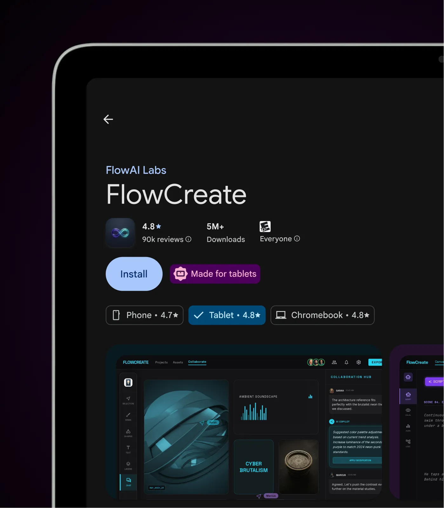
출처: Android Developers
그럼 실제로 어떻게 적응시킬까요. Compose가 제공하는 도구는 이렇습니다.
- Window size class로 레이아웃 분기 · 앱이 현재 창 크기 등급(Compact·Medium·Expanded)을 읽어 레이아웃을 바꿉니다. 폰 같은 좁은 화면에서는 한 화면만 보여주고, 태블릿처럼 넓은 화면에서는 목록과 상세를 나란히 두는 식입니다.
- I/O '26 신규 적응형 레이아웃 API ·
Grid·FlexBox는 창 크기에 따라 항목을 자동으로 재배치하는 레이아웃이고,MediaQueryAPI는 CSS의 미디어 쿼리처럼 화면 조건별로 UI를 분기합니다. Navigation 3의 Scene Decorators는 상단 앱바나 내비게이션 레일 같은 공통 UI를 화면(scene) 단위로 얹을 수 있게 해줍니다. - 화면 크기와 함께 입력도 달라진다 · 놓치기 쉬운 부분입니다. 대화면에서는 마우스·트랙패드·키보드 입력이 늘어납니다. Compose 1.11이 트랙패드를 마우스급으로 지원하고, 지금 포커스가 어디 있는지 보여주는 포커스 링도 들어왔습니다.
- Googlebook(랩톱)까지 커버 · 테스트 · adaptive로 짜두면 새 랩톱 폼팩터인 Googlebook에도 그대로 대응됩니다. Android Studio Canary의 Desktop Emulator로 미리 확인할 수 있습니다.
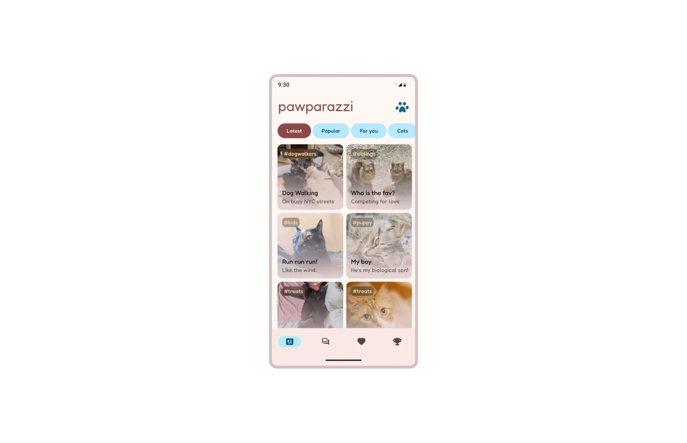
출처: Android Developers
Android 17(API 37)을 타깃하면, 대화면(sw > 600dp)에서 앱이 걸어 둔 방향·비율·리사이저빌리티 제한을 시스템이 그냥 무시합니다(Android 16의 opt-out도 제거됨). 앱이 죽지는 않아도 UI 깨짐이 생깁니다. 세로 고정 레이아웃이 늘어나거나 잘리고, 카메라 프리뷰가 왜곡되고, 회전 시 상태가 손실됩니다.
개발자가 끌 수 있는 opt-out은 없습니다. 예외는 다음뿐입니다.
- 게임 카테고리 앱
- 사용자가 기기 설정에서 직접 켠 opt-in
- 작은 화면(
sw < 600dp)
시스템이 무시하는 속성은 이렇습니다.
screenOrientationresizableActivityminAspectRatio·maxAspectRatiosetRequestedOrientation()
결국 일반 서비스에는 adaptive가 유일한 답입니다.
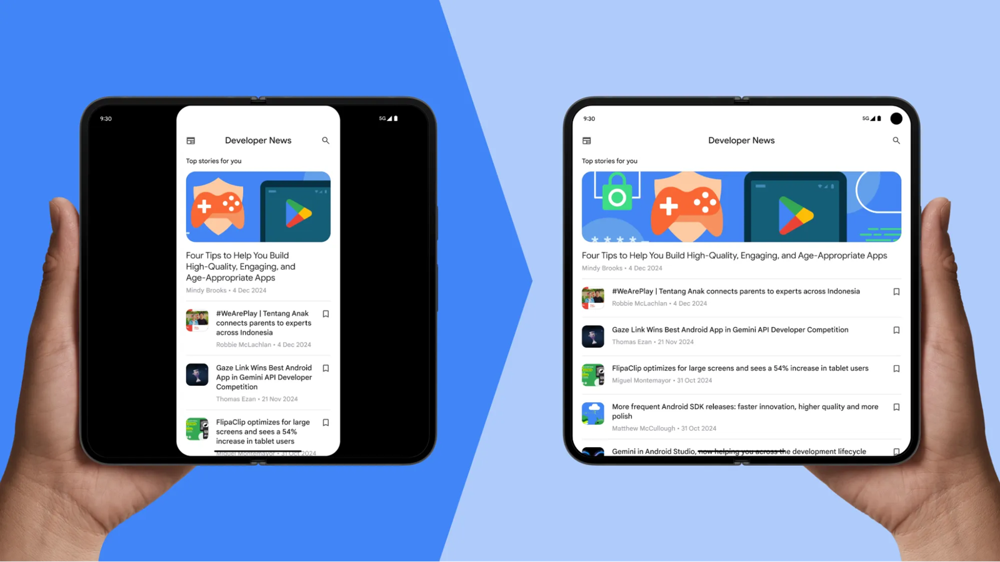
곧: Wear OS 7 · 관망: Android XR
Wear OS 7의 변화는 이렇습니다.
- 기반·배터리 · Android 17 기반으로, 이전 세대(Wear OS 6) 대비 배터리를 최대 10% 아낍니다.
- Wear Widgets · 기존 Tiles가 Wear Widgets(2×1·2×2 타일)로 진화했습니다.
- Live Updates · 폰의 Live Updates가 워치 페이스로 올라와 기존 Ongoing Activities를 대체합니다.
- Gemini · 일부 워치에 온디바이스 Gemini가 들어옵니다(Nano v3 필요).
- 일정 · 지금 Canary 에뮬레이터로 개발할 수 있고, 정식 출시는 하반기입니다.
Android XR은 Developer Preview 4 단계입니다. SceneCore·ARCore for Jetpack XR이 곧 Beta, Unreal/Godot 공식 지원, 하드웨어는 Catalyst 프로그램(XREAL Project Aura). 지금 XR 앱을 본격적으로 만들 단계는 아닙니다. 다만 기존 adaptive 앱은 별도 작업 없이 몰입형 환경에 그대로 표시되므로, 이 글에서 다룬 Compose·adaptive·접근성 대응이 사실상 XR 준비를 겸합니다.
여섯 주제 요약
| 1. UI | View는 유지보수 모드, Compose가 기본 · 마이그레이션은 우리 것으로 튜닝한 Skill |
| 2. 성능 | R8 Analyzer로 최적화 점수 · Memory Limiter는 ApplicationExitInfo로 탐지 |
| 3. AI | 앱이 에이전트에 기능 노출(App Functions) · 온디바이스 Gemini Nano 4 |
| 4. 보안 | 권한 대신 Picker(Photo/Contact) · Android 17 필수(SMS OTP·BAL·CT) 🔴 |
| 5. 미디어 | Media3 표준화 = PreloadManager 개선 + 백그라운드 제약 방어 |
| 6. 멀티 | Adaptive by Default · 대화면 리사이저빌리티 필수 🔴 |
표준 컴포넌트를 쓰고 adaptive하게 설계하면, 성능·보안·멀티 디바이스 대응의 상당 부분을 기능마다 따로 처리하지 않고 하나의 설계 결정으로 흡수할 수 있습니다. 비표준·고정 구현이 많을수록 Android 17 대응에 드는 작업이 늘어납니다. 위에서 🔴🟡🟢으로 나눈 우선순위 중 제일 급한 🔴 하나부터 시작하는 편이 현실적입니다.